3D 双 DRAM 单逻辑近存计算芯片零基础精讲：把 1GB 内存和 1.2GHz 算力叠在一起 A 1.2GHz 12.77GB/s/mm² 3D Two-DRAM-One-Logic Process-Near-Memory Chip for Edge LLM Applications（ISSCC 2026 · Paper 30.7）
大语言模型（LLM）要在 PC、手机上跑，最大的瓶颈不是算力，而是内存：权重有 GB 级，必须反复从 DRAM 里搬。本论文把 两片 512Mb DRAM 晶圆 + 一片 28nm 逻辑晶圆用 3D 堆叠（混合键合 HB + mini-TSV）叠成一个 1GB 片上内存 + 1.2GHz 计算的芯片：
- 带宽密度 12.77 GB/s/mm²（HBM3E 的 1.22×、GDDR6 的 8.63×）；
- 每比特访问能量 0.67 pJ/b（GDDR6 的 9%、HBM3E 的 28%）；
- 连续访问延迟降到 3.2 ns（比 LPDDR4 低 90%~93%）；
- 对外 DDR4 兼容：既能当普通内存条用，也能通过扩展命令（T-ACC/Act-Reg）触发近存计算（PNM）。
- LLM 推理 = 搬权重：生成式推理每输出一个 token，都要把所有权重读一遍；一次权重读的能耗/延迟远超一次计算。所以“把计算放到 DRAM 旁边”比“把计算做得更快”更关键——这就是近存计算（PNM）的出发点。
- 3D 堆叠 ≠ 3D 打印：它是指把几片已经做好的晶圆（die）像三明治一样叠起来，用微米级的互连（HB、TSV）上下打通。关键是互连密度——互连越密，带宽越高，这就是 12.77 GB/s/mm² 的来源。
- DDR4 兼容是“产品化”的关键：论文没有发明新接口，而是让芯片在现有 DDR4 内存插槽上即插即用，还新增两条命令让主机触发计算——低集成门槛 = 真实部署的可能。
§0.1摘要逐句精读
| 原文（摘录） | 人话解释 |
|---|---|
| “edge tasks typically use much smaller batch sizes, which significantly reduces data reuse during the generation stage of LLM inference and makes the task more memory-intensive” | 终端一次只服务一个用户（batch=1），LLM 生成阶段每个 token 几乎不重复利用数据 → 任务从“算力密集”变成“内存密集”。 |
| “most prior works integrate compute directly within the DRAM die, constraining compute capability due to DRAM process limitations” | 前作把计算做进 DRAM 晶圆，但 DRAM 工艺做不了高性能逻辑 → 算力被工艺卡死。本文把逻辑单独放一片晶圆。 |
| “stacks two DRAM dies with one logic die, providing 1GB on-chip DRAM capacity and a memory density of 99.4Mb/mm²” | 两片 DRAM + 一片逻辑 = 1GB 片上内存，存储密度 99.4 Mb/mm²。 |
| “high-density HB + mini-TSV interconnect… achieving a bandwidth density of 12.77GB/s/mm²” | 高密度混合键合 + mini-TSV 互连 → 带宽密度 12.77 GB/s/mm²。 |
| “supports a DDR4-protocol-compatible external interface… when PNM is disabled, the chip operates as conventional host DRAM” | 兼容 DDR4 接口；PNM 关闭时就是普通 DRAM——两种身份无缝切换。 |
| “reducing memory-access latency by up to 93% and GEMM execution time by up to 98%” | 访存延迟最多降 93%，GEMM 执行时间最多降 98%（8 芯片 DIMM 场景）。 |
§0.2论文的核心贡献清单
- Two-DRAM-One-Logic 3D 架构：逻辑与 DRAM 分开制造再 3D 堆叠 → 逻辑享受标准 CMOS（1.2GHz 频率），DRAM 保持密度（99.4 Mb/mm²），两不耽误；
- 高带宽密度互连：HB（pitch 3 μm）+ mini-TSV（pitch 5 μm），每 TSV 配两个 HB 冗余 → 12.77 GB/s/mm² 且良率可控（3D 集成仅增加 0.58% 失效率）；
- 极简 3D DRAM PHY：总线 2048b 很宽，引脚速率很低 → PHY 只做同步+电平转换，比 DDR/HBM PHY 简单省电（0.67 pJ/b）；
- DDR4 兼容 + 双命令扩展：T-ACC（触发 ACC）、Act-Reg（配置寄存器）两条新命令，PNM 可关闭退化为普通 DRAM；
- RISC-V ACC + 自定义 FPU + DMA：可编程计算引擎，fadd/fsub/fmul/fdiv 硬件加速，DMA 负责批量搬运（LLM 连续访存多）；
- GEMM 数据流与访存优化：M/K 各切 4 份给 16 个 ACC（零跨块通信），开放页策略 + 2048b 缓冲（buf_hit 免 DRAM 访问）→ 吞吐 +53.8%，128³ GEMM 比 i7-13700F 快 86%，8 芯片 DIMM 快 98%。
完全零基础：按 01→09 顺序读，重点玩 3 个交互仿真、看 3 个视频，约 60 分钟。已经懂 DRAM/总线概念的：从 §4（3D 架构）和 §6（GEMM 数据流）开始，这两章是本文最精彩的设计取舍。
§1背景：边缘 LLM 的困境——为什么“在手机上跑大模型”这么难
1.1 为什么边缘 LLM 是“内存密集”任务
云端跑 LLM 用大批量（large batch）：同时处理很多用户的请求，同一个权重可以被大量请求复用，计算密度高、数据复用率高。但终端设备（PC、手机）一次只服务一个用户，batch = 1。后果是：
- 预填充（prefill）阶段：处理用户输入，计算密集但只占一小部分时间；
- 生成（generation）阶段：逐个 token 生成输出，每个 token 都要读取全部模型权重做矩阵乘——但只算一小块。数据复用率极低 → 整个系统被“读权重”的访存带宽锁死（memory-intensive）。
一个 7B 参数的模型，FP16 权重约 14 GB。每生成 1 个 token，都要把这 14 GB 从头到尾读一遍。哪怕算力再强，访存带宽决定生成速度（token/s）。所以“把带宽做上去、把访存能耗降下来”比堆算力更重要——这正是近存计算（PNM）的用武之地。
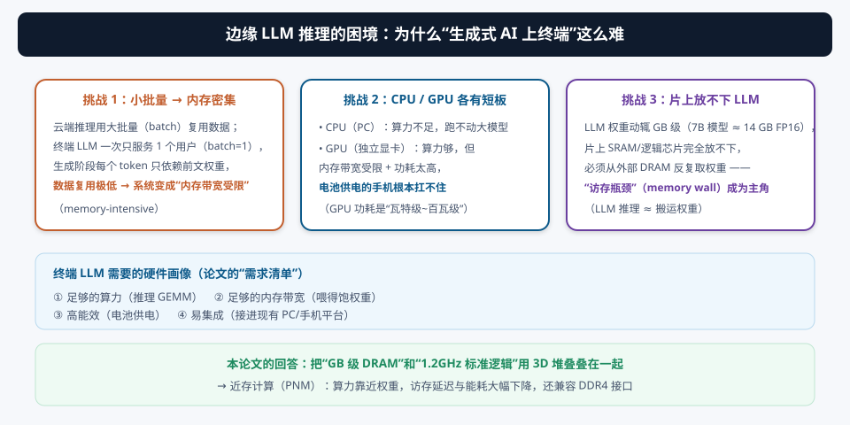
1.2 CPU / GPU 为什么都不合适
| 方案 | 算力 | 带宽 | 能效 | 结论 |
|---|---|---|---|---|
| CPU（如 i7） | 低 | 低 | 中 | 算力不足，128³ GEMM 要很久（论文实测对比对象） |
| GPU（独立显卡） | 高 | 受显存带宽限制 | 差（几十~几百瓦） | 功耗太高，电池设备无法接受 |
| NPU（端侧 AI 芯片） | 中 | 片上 SRAM 太小 | 好 | 权重放不下，仍需外接 DRAM → 访存瓶颈依旧 |
结论：终端 LLM 需要一种“自带大容量内存 + 足够算力 + 高能效 + 好集成”的方案。论文把目光投向近存计算（Processing-Near-Memory, PNM）：让计算器住在 DRAM 隔壁，而不是隔着一整条内存总线。
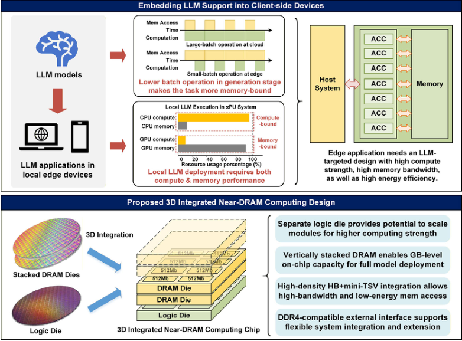
§2PNM 的两条路线与本论文的选择：3D 堆叠
2.1 算力放哪：DRAM 内计算 vs 3D 堆叠近存
“近存”的本质是让计算单元尽量靠近存储。业界尝试过两条路线：
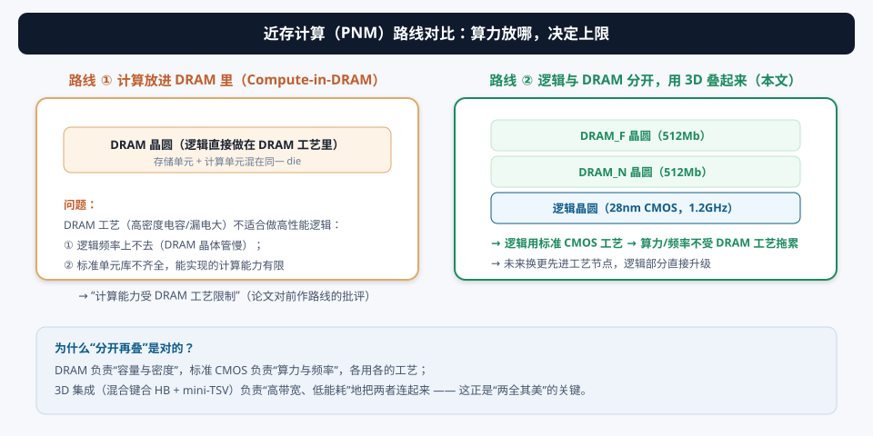
- DRAM 工艺不适合做逻辑：DRAM 晶圆追求存储密度（深沟槽电容、大漏电），晶体管性能差、标准单元库不全，能实现的逻辑频率和复杂度都很有限——前作 PNM（如 [2][3][4]）大多受此约束；
- 分开做：DRAM 用 DRAM 工艺保密度（99.4 Mb/mm²），逻辑用 28nm 标准 CMOS 保频率（1.2 GHz）；
- 3D 互连补带宽：HB + mini-TSV 把两片 DRAM 的行缓冲直接连到逻辑层，总线宽达 2048b → 带宽密度碾压传统引脚。
2.2 3D 集成技术：混合键合（HB）与 mini-TSV
3D 堆叠的“胶水”是两种垂直互连：
- 混合键合（Hybrid Bonding, HB）：两片晶圆面对面直接金属键合，互连间距极小（本设计 pitch = 3 μm），密度极高——这是带宽密度 12.77 GB/s/mm² 的来源；
- mini-TSV（硅通孔）：垂直穿通硅片的过孔（pitch = 5 μm）。因为堆了三层，中间那层 DRAM_N 的信号要“直连 HB”到逻辑层，而最上层 DRAM_F 的信号得走 “HB → TSV → HB” 链穿过 DRAM_N 才能到达逻辑层。
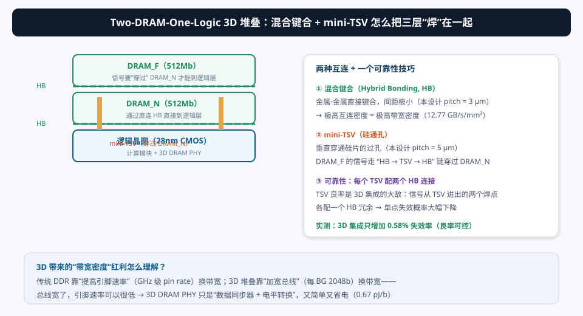
TSV/HB 任何一个焊点失效，整条通路就断了。论文的可靠性技巧：每个 TSV 配两个 HB 连接（一主一备）。实测结果：3D 集成只引入 0.58% 的额外失效率，DRAM 本体良率也很好（96ms@98°C 保持测试失效率 <0.05%）——这说明这套 3D 工艺已经具备量产可行性。
§3LLM 推理与 GEMM 基础：先懂算子，才懂硬件
3.1 为什么 LLM 访存是瓶颈（再深入一点）
LLM 的每一层几乎都是 线性层（全连接）或注意力（Attention），本质都是矩阵乘法。以生成阶段为例，每输出一个 token：
- 从 DRAM 读出该层的全部权重矩阵（GB 级）；
- 与当前 token 的隐向量做矩阵乘（计算量其实很小）；
- 结果喂给下一层，重复。
所以“每 token 访存量 ≈ 模型大小”，而“每 token 计算量 ≈ 一个向量乘矩阵”。访存：计算 ≈ 模型大小 : 向量大小，差几个数量级——这就是“内存密集”的本质。
- “低 batch → 低数据复用”：不能指望靠 batch 内复用掩盖访存，必须把访存本身做快；
- “连续的大块 load/store 非常多”：权重是按顺序连续存放的 → 适合 DMA 批量搬运 + 宽总线一次多取。
3.2 GEMM：LLM 的主算子
GEMM（General Matrix Multiply，通用矩阵乘）C = A × B，是 LLM 占绝对主导的计算核。论文明确说 “GEMM is the dominant kernel in LLM computation, thus our evaluation focuses on this task”——整个芯片的评估都围绕 GEMM 展开。
把 GEMM 放到多核/多块上跑，经典做法是分块（tiling）：把 M、K 维切成小块分给不同处理单元。怎么切、怎么分、怎么避免块间通信，就是 §6 的核心。
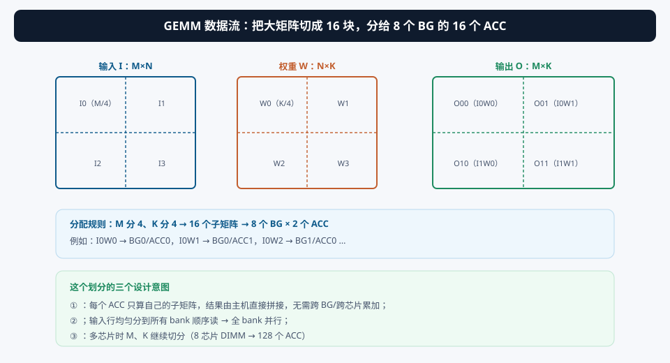
① 为什么生成阶段“batch=1”会让 GPU 也变慢？（提示：GPU 靠大批量隐藏访存延迟。）② 如果权重是 FP16 的 7B 模型，1GB 片上内存能装下吗？（提示：14 GB vs 1 GB——所以论文强调“减少离片访问”，但离片访问仍然存在，靠 DDR4 接口兜底。）
§4创新①：Two-DRAM-One-Logic 架构——带宽密度怎么做到 12.77 GB/s/mm²
4.1 为什么是“两片 DRAM + 一片逻辑”
两片 512Mb DRAM（DRAM_N 与 DRAM_F）+ 一片 28nm 逻辑，组成一个 1Gb 的“bankgroup 块（BG）”，全芯片 8 个 BG = 1GB。这个结构的三个理由：
- 容量：两片 DRAM 叠在一起，1 个 BG 就有 1Gb → 8 个 BG 共 1GB，存储密度 99.4 Mb/mm²（把“片上内存做大”以装下更多模型）；
- 带宽：每片 DRAM 的行缓冲都通过宽总线连到逻辑层 → 带宽随 DRAM 片数翻倍；
- 工艺解耦：逻辑层用标准 CMOS（28nm），频率 1.2 GHz，且未来换更先进工艺只需重做逻辑片——论文原话 “decoupling logic from DRAM allows implementing compute logic in standard CMOS and seamlessly leveraging future improvements via advances in process nodes”。
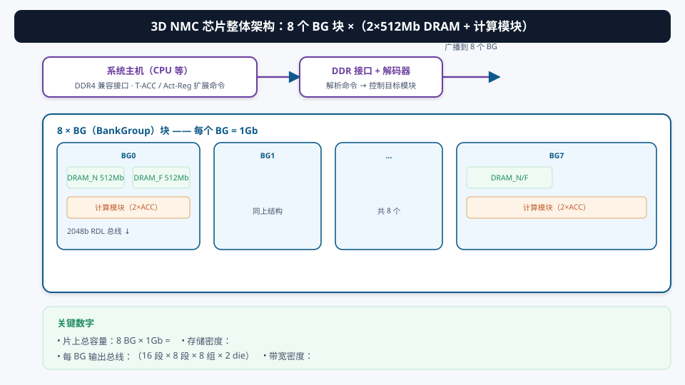
4.2 2048b 总线与极简 3D DRAM PHY
每个 BG 的输出总线是 2048b（= 16 段 × 8 bank × 8 组 × 2 片 DRAM）。这带来一个连锁设计红利：
传统 DDR/HBM 为了在有限的引脚上获得高带宽，必须把引脚速率做得极高（GHz 级）→ PHY（物理层）要做均衡、时钟恢复、训练……复杂又费电。本设计 3D 总线宽达 2048b，同样带宽下每个引脚的速率低得多 → 3D DRAM PHY 只需要“数据同步 + 电平转换”，几乎是个胶水电路。这就是 0.67 pJ/b 能效的来源之一。
再看 3D 堆叠的细节（论文 Fig. 30.7.5）：HB pitch 3 μm、TSV pitch 5 μm、每 TSV 两个 HB 冗余。这些参数决定了“每平方毫米能过多少数据”——带宽密度 = 互连密度 × 每线速率。
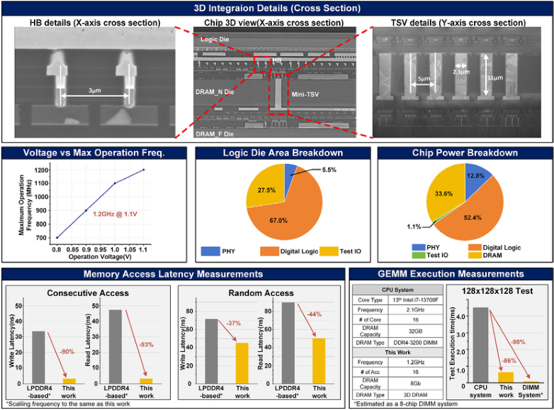
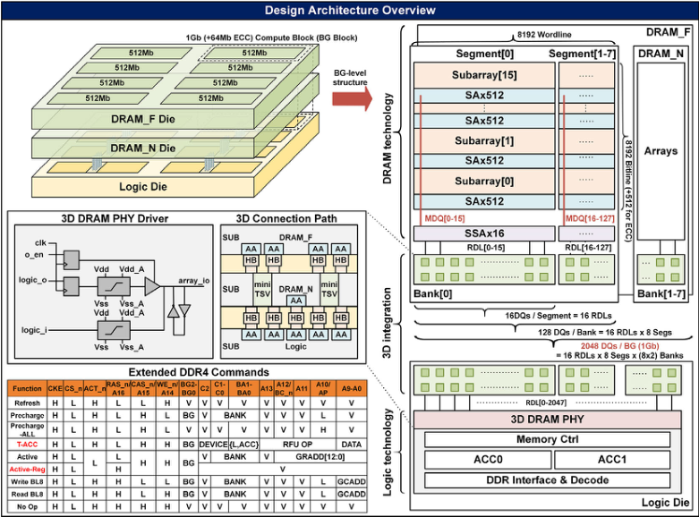
① 为什么 DRAM_F 的信号要“穿过” DRAM_N 而不是直接下到逻辑层？（提示：三明治结构，中间层挡路——这就是 TSV 的用途。）② 2048b 总线 = 256 字节/次，一次能取多少 FP16 权重？（提示：128 个。）③ 如果带宽不变、总线减半到 1024b，PHY 会变难还是变简单？
§5创新②：DDR4 兼容接口与 RISC-V 计算引擎
5.1 一个芯片，两种身份：PNM 开/关
很多 PNM 研究最“劝退”产业的一点是：要专用驱动、专用接口、专用软件栈。本论文用 DDR4 协议兼容化解集成难题：
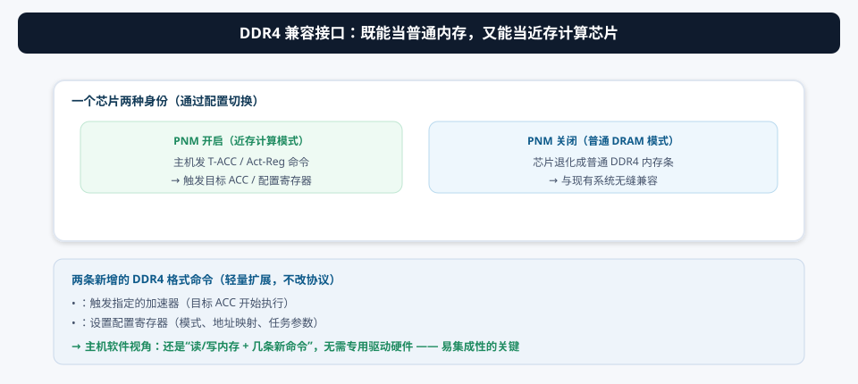
- 两条新增命令（仍走 DDR4 命令格式）：T-ACC（触发指定加速器开始执行）、Act-Reg（设置配置寄存器）；
- 主机照常访问 DRAM、通过 DDR 兼容接口管理 ACC——不需要专用硬件驱动；
- PNM 关闭时，芯片就是普通主机 DRAM（用户甚至不用感知它是个计算芯片）。
市面上 GPU/NPU 是“算力芯片 + 外接内存”；本论文反着来：把计算引擎塞进内存芯片，对外保持内存的“职业素养”。这样主机软件可以渐进式迁移：先用它当内存，再逐步把 GEMM 卸载给 ACC——部署路径平滑。
5.2 ACC 计算引擎：RISC-V + 自定义 FPU + DMA
每个 BG 的计算模块里有 2 个 ACC，每个 ACC 是：
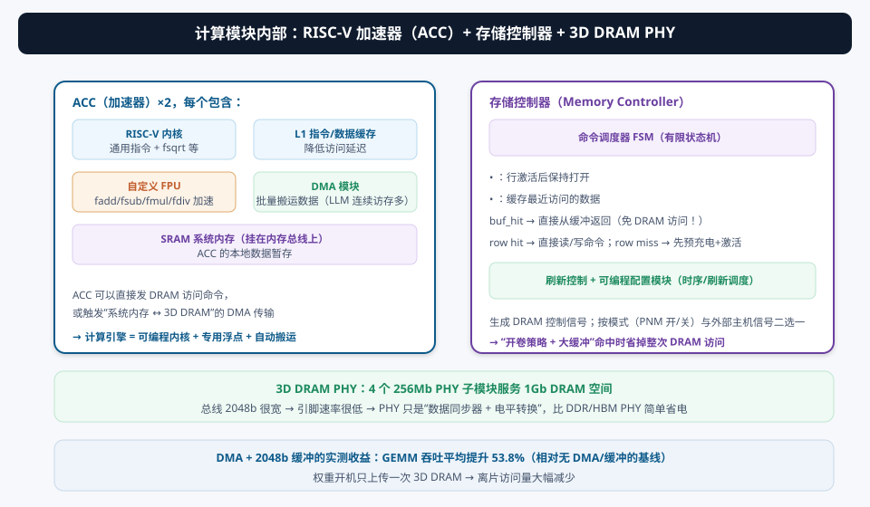
- RISC-V 内核：支持通用指令（可编程！不是固定功能），sqrt 等由内核软实现；
- 自定义 FPU：硬件加速 LLM 的关键浮点指令 fadd / fsub / fmul / fdiv——GEMM 的 MAC 和 softmax/layernorm 都用得上；
- L1 指令/数据缓存：降低指令与局部数据访问延迟；
- SRAM 系统内存：挂在内存总线上，作为 ACC 的本地暂存；
- DMA 模块：LLM 有大量连续 load/store，DMA 负责在“系统内存 ↔ 3D DRAM”之间批量搬运，让内核专注计算。
存储控制器这边：命令调度器 FSM 采用开放页策略（open-page）（行激活后保持打开，后续访问同一行免激活）并加了 2048b 缓冲——命中（buf_hit）就直接从缓冲返回，整次 DRAM 访问都省了。刷新调度由可编程配置模块管理。
① 为什么用可编程 RISC-V 而不是固定 GEMM 引擎？（提示：灵活性——能跑 layernorm、softmax、其他算子；代价是效率，所以配了专用 FPU 补性能。）② 2048b 缓冲什么时候命中率高？（提示：连续顺序访问——正好是 LLM 权重读取的模式！）
§6创新③：GEMM 数据流与访存优化——怎么喂饱 16 个加速器
6.1 M/K 切分：零跨块通信的全芯片分配
一个 M×N×K 的 GEMM（M×N 输入 × N×K 权重），论文的分配方案：
- M 切 4、K 切 4 → 16 个 (M/4)×(K/4) 子任务，分给 8 个 BG × 2 个 ACC；
- 例如 I0W0 → BG0/ACC0，I0W1 → BG0/ACC1，I0W2 → BG1/ACC0……（图 6.1 底部）；
- 零跨块通信：每个 ACC 算出的子矩阵互不依赖，主机把 16 块结果直接拼成最终输出，不需要任何跨 BG/跨芯片的累加——这是吞吐能线性扩展的关键；
- 多芯片扩展：装 8 片 DIMM 时 M、K 继续切 → 128 个 ACC 并行（实测 GEMM 快 98% 的场景）。
论文原话：“Cross-BG or cross-chip data accesses require host intervention and should be avoided whenever possible.”——跨 BG/跨芯片访问要经过主机，延迟和能耗都高。所以 GEMM 的切分必须保证每个子任务的数据都本地可得（权重在本 BG 的 DRAM 里、输入用全 bank 并行读），数据流设计围着“本地性”转。
6.2 访存优化：DMA + 2048b 缓冲 + 开放页
喂饱 ACC 的另一半是“读得快”。三个手段叠加：
- DMA 批量搬运：权重在 3D DRAM 里连续存放，DMA 一次搬一大块，不用内核一条条 load；
- 输入行全 bank 并行：每个输入行均匀分布到所有 bank、顺序读取 → 一次激活多个 bank 的并行带宽；
- 2048b 缓冲 + 开放页：最近访问的数据留在缓冲里，连续访问时 buf_hit 直接命中；行命中免预充电/激活。
论文实测：加上 DMA 和 2048b 缓冲后，GEMM 吞吐平均提升 53.8%（相对无 DMA/缓冲的基线）。此外，某些场景下权重开机只上传一次到 3D DRAM，之后整个推理过程的离片访问量大减——把“内存芯片”的容量优势用到了极致。
① 为什么权重“连续存放”特别重要？（提示：DMA 和开放页都爱吃顺序访问；乱序访问会频繁 row miss。）② 输入行“均匀分布到所有 bank”是为了什么？（提示：bank 级并行度；同一 bank 的连续访问会被行冲突卡住。）③ 8 芯片 DIMM 场景里，输出矩阵在哪拼？（提示：主机。跨芯片拼一次的开销远小于跨芯片算。）
§7存储层次与数据通路：一条 2048b 的数据是怎么“流”出来的
7.1 DRAM 内部层次：bank → segment → subarray
要理解 3D 近存为什么快，得先知道 DRAM 内部长什么样（本设计的层次）：
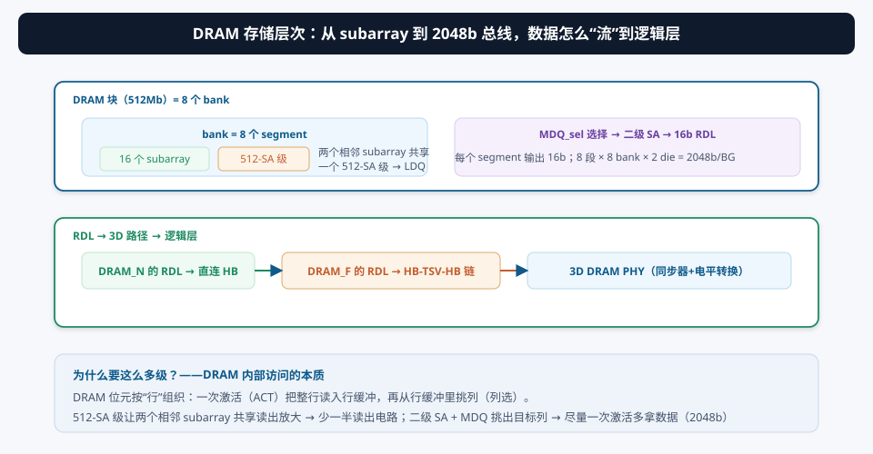
- bank（8 个）：DRAM 的基本并行单元，不同 bank 可以同时服务不同访问；
- segment（8 个/bank）：段内组织 subarray；
- subarray（16 个/segment）：真正的存储阵列。两个相邻 subarray 共享一个 512-SA 读出放大级——SA（Sense Amplifier）是 DRAM 里最占面积的电路之一，共享 = 省一半读出电路面积；
- 列选（MDQ_sel）→ 二级 SA：把目标列的数据选到 MDQ 线上，二级 SA 加速读出；
- 16b RDL 输出：每个 segment 输出 16b；8 segment × 8 bank × 2 die = 2048b/BG，经 3D 路径送进逻辑层。
7.2 交互演示 A：3D 堆叠与数据路径
① 为什么 subarray 要“两两共享”读出放大级而不是每列一个？（提示：面积 vs 性能的折中，SA 面积大。）② 二级 SA 起什么作用？（提示：第一级读出信号很弱，需要再放大才能驱动长距离 RDL 总线。）③ 如果 RDL 是 16b/segment，一次 DRAM 读能取多少个 FP16 权重？2048b 呢？
§8实测与对比：这颗 3D 芯片的成绩单
8.1 带宽 · 能量 · 延迟
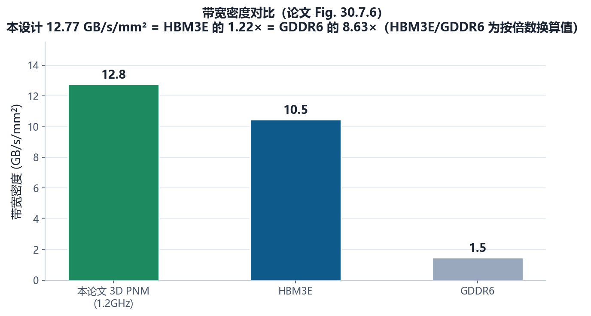
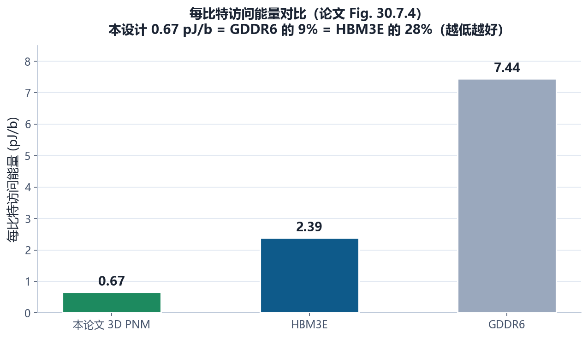
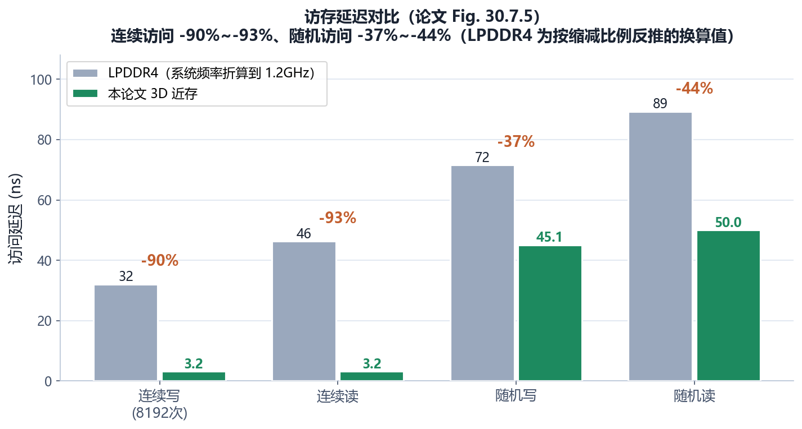
- DRAM 本身质量：526 Mbps @ 1.2V 正常工作；96ms@98°C 保持测试，全晶圆失效率 <0.05%；3D 集成只额外引入 0.58% 失效率 → 工艺成熟度可信；
- 频率：逻辑层 28nm CMOS，1.2 GHz。
8.2 GEMM 收益与整体对比
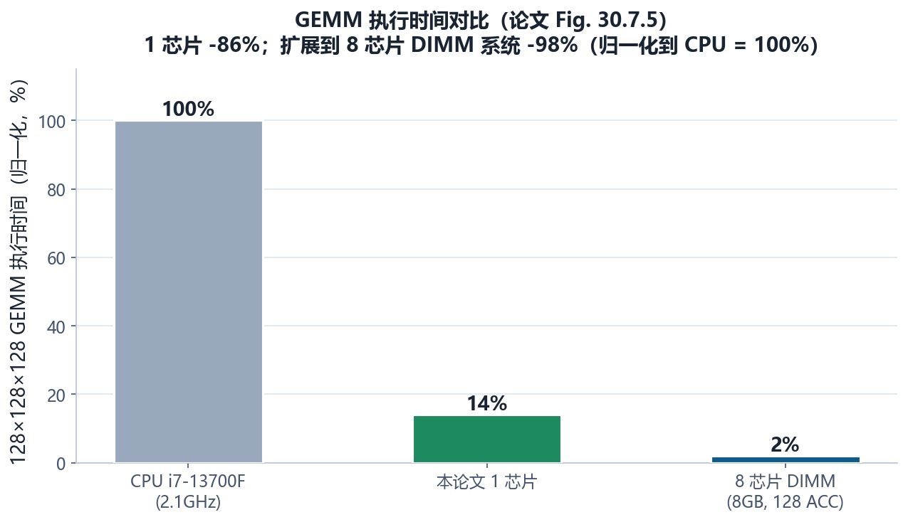
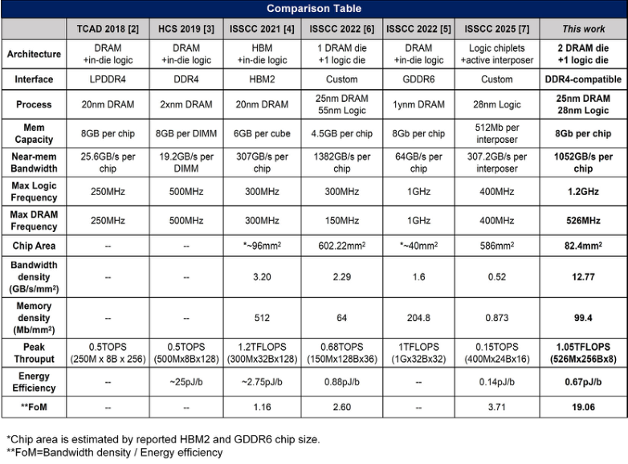
| 对比项 | 本论文 | 前作 3D PNM | active interposer [7] |
|---|---|---|---|
| 带宽密度 | 12.77 GB/s/mm² | — | — |
| 存储密度 | 99.4 Mb/mm² | — | — |
| 每比特能量 | 0.67 pJ/b | — | — |
| 计算频率 | 1.2 GHz（28nm 逻辑） | 受 DRAM 工艺限制 | — |
| 接口 | DDR4 兼容（可关闭 PNM） | 专用 | 专用 |
| FoM | 7.33× / 5.13× | 1× | 1× |
对比表最值得注意的一点：前作把算力做进 DRAM 所以频率上不去；本论文把逻辑单独放 28nm 逻辑片，所以 1.2 GHz 还吃到了带宽密度红利。“逻辑与 DRAM 工艺解耦 + 3D 高密度互连 + DDR4 兼容”三件事缺一不可：工艺解耦保频率、3D 互连保带宽、DDR4 保部署。
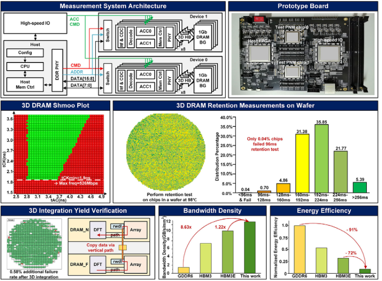
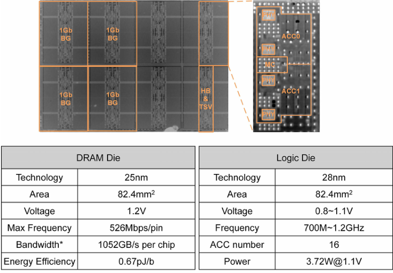
① 论文的对比对象大多只有“部分指标可比”：带宽密度、存储密度、pJ/b 是不同工作的不同强项，FoM 的权重选择（怎么综合成一个数）是作者定义的，读时要自己判断合不合理；② “相对 i7-13700F 快 86%”这类数字高度依赖 CPU 端代码优化水平（是否 AVX、是否缓存友好），只能作为量级参考；③ 3D 集成成本（良率、散热、测试）论文没有展开，但 0.58% 的额外失效率说明良率不是主要障碍。
§9未来研究方向 · 术语表 · 参考资料
9.1 未来研究方向
- 计算强度提升：从“访存引擎”到“真 GEMM 引擎”：本文 ACC 是通用 RISC-V + FPU，GEMM 主要靠软件循环 + DMA 喂数据。下一步可以在逻辑片上加入专用 MAC 阵列（如脉动阵列），把“带宽优势”直接变成“算力优势”——带宽已经是 12.77 GB/s/mm²，算力却还有上升空间；
- 更大的 3D 堆叠：2 DRAM + 1 逻辑是起点。往 4~8 层 DRAM、多片逻辑的方向堆，容量上到 8GB/16GB，配合多芯片 DIMM，就能在终端塞下更大模型；
- LLM 全算子加速：论文只评估 GEMM。Attention（softmax、矩阵乘）、layernorm、KV cache 管理等算子在终端 LLM 里占比不低，把这些也搬进 ACC/加专用单元，才是完整方案；
- 软硬件协同编译栈：DDR4 命令扩展（T-ACC/Act-Reg）有了硬件钩子，但还没有编译器自动把 PyTorch 模型映射到 BG/ACC 分配 + DMA 调度。做一个“LLM → 3D PNM”的自动编译器是软件侧的金矿；
- 与 CiM 融合：3D PNM 解决“带宽”，CiM 解决“搬移”。如果逻辑片里再嵌入数字 CiM 宏（像 09/10 号论文那样），把权重就地计算，能效还能再上一个台阶——这是“近存 + 存内”的融合方向；
- 先进工艺与散热/良率工程：逻辑片换成更先进节点（如 5nm/3nm）直接提速；但 3D 堆叠的散热（多层 die 热量集中）和测试成本需要系统级方案，这也是产业落地的关键问题；
- 安全与隐私：终端 LLM 卖点是数据不出设备。PNM 芯片作为“内存+计算”一体设备，天然适合做受保护计算区域（TEE 式隔离）——把模型权重和用户数据都锁在片内。
9.2 术语表
- LLM（Large Language Model，大语言模型）
- 参数量数十亿起的语言模型，推理以 GEMM 为主。
- PNM（Processing-Near-Memory，近存计算）
- 把计算单元放到存储器旁边，缩短访存路径。
- PIM / CiM
- Processing-In-Memory / Compute-In-Memory：计算放进存储阵列内部（更激进）；本文属于“近存”路线。
- Memory-Intensive（内存密集）
- 任务性能被访存带宽而非算力限制。
- Generation Stage（生成阶段）
- LLM 逐 token 输出的阶段；batch=1 时数据复用极低。
- GEMM（General Matrix Multiply）
- 通用矩阵乘 C=A×B，LLM 的主导算子。
- 3D 堆叠（3D Stacking）
- 把多片已制造完成的 die 垂直叠放并用垂直互连打通。
- HB（Hybrid Bonding，混合键合）
- 晶圆间金属-金属直接键合，互连密度极高（本设计 pitch 3μm）。
- TSV（Through-Silicon Via，硅通孔）
- 垂直穿过硅片的金属过孔（本设计 mini-TSV，pitch 5μm）。
- BG（BankGroup）
- 本设计的基本块：两片 512Mb DRAM + 一个计算模块，共 1Gb。
- RDL（Reduced/Row Data Line）
- DRAM 段输出的数据线（本设计 16b/段），汇总为 2048b/BG。
- SA（Sense Amplifier，读出放大器）
- DRAM 读出信号放大的关键电路；本设计两 subarray 共享 512-SA 级。
- ACC（Accelerator，加速器）
- 本设计逻辑片上的计算引擎：RISC-V + FPU + DMA。
- FPU（Floating-Point Unit）
- 浮点运算单元；本文自定义加速 fadd/fsub/fmul/fdiv。
- DMA（Direct Memory Access）
- 不经过 CPU 内核的批量数据搬运模块。
- 开放页策略（Open-Page Policy）
- DRAM 行激活后保持打开，同行后续访问免预充电/激活。
- buf_hit / 2048b 缓冲
- 最近访问数据的片上缓冲；命中时免去整次 DRAM 访问。
- PHY（Physical Layer，物理层）
- 接口的模拟前端。本设计 3D DRAM PHY 只需同步+电平转换。
- DDR4 兼容 / T-ACC / Act-Reg
- 对外保持 DDR4 协议；两条扩展命令分别触发 ACC、设置配置寄存器。
- 带宽密度（GB/s/mm²）
- 单位面积可提供的带宽，3D 堆叠的核心指标（本设计 12.77）。
- FoM（Figure of Merit）
- 综合性能指标；本文 FoM 相对前作 3D PNM 7.33×、active interposer 5.13×。
9.3 参考资料
- Y. Cao, J. Jiang, et al., “A 1.2GHz 12.77GB/s/mm² 3D Two-DRAM-One-Logic Process-Near-Memory Chip for Edge LLM Applications,” ISSCC 2026, Paper 30.7. DOI: 10.1109/ISSCC49663.2026.11409184
- C. Li et al., “H2-LLM: Hardware-Dataflow Co-Exploration for Heterogeneous Hybrid-Bonding-based Low-Batch LLM Inference,” ISCA, 2025.（低 batch LLM 数据流研究）
- H. Shin et al., “McDRAM: Low Latency and Energy-Efficient Matrix Computations in DRAM,” IEEE TCAD, vol. 37, no. 11, 2018.（DRAM 内计算前作）
- F. Devaux, “The True Processing In Memory Accelerator,” IEEE Hot Chips, 2019.（UPMEM PIM）
- Y.-C. Kwon et al., “A 20nm 6GB Function-In-Memory DRAM, Based on HBM2 with a 1.2TFLOPS Programmable Computing Unit…,” ISSCC 2021, pp. 350-351.（HBM 内计算前作）
- S. Lee et al., “A 1ynm 1.25V 8Gb, 16Gb/s/pin GDDR6-based Accelerator-in-Memory supporting 1TFLOPS MAC Operation…,” ISSCC 2022, pp. 176-177.
- D. Niu et al., “184QPS/W 64Mb/mm² 3D Logic-to-DRAM Hybrid Bonding with Process-Near-Memory Engine for Recommendation System,” ISSCC 2022, pp. 462-463.（3D 近存前作）
- B. Jiao et al., “SHINSAI: A 586mm² Reusable Active TSV Interposer with Programmable Interconnect Fabric and 512Mb 3D Underdeck Memory,” ISSCC 2025, pp. 612-613.（active interposer 对比 [7]）